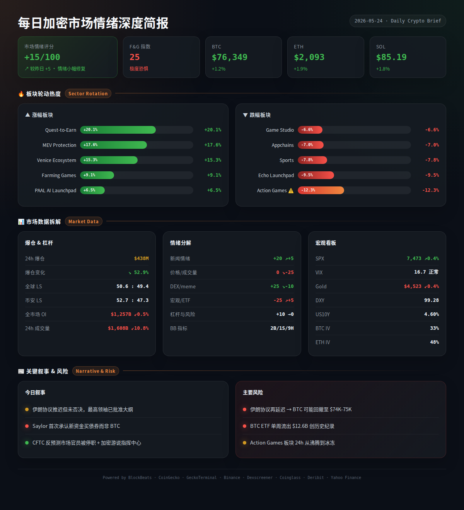
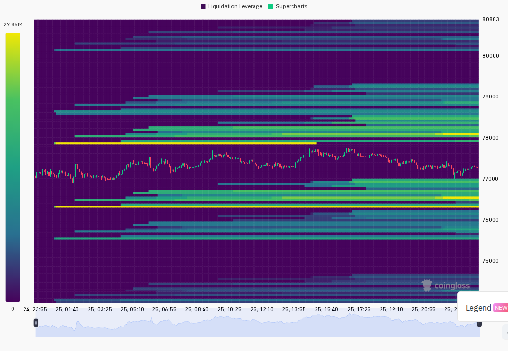
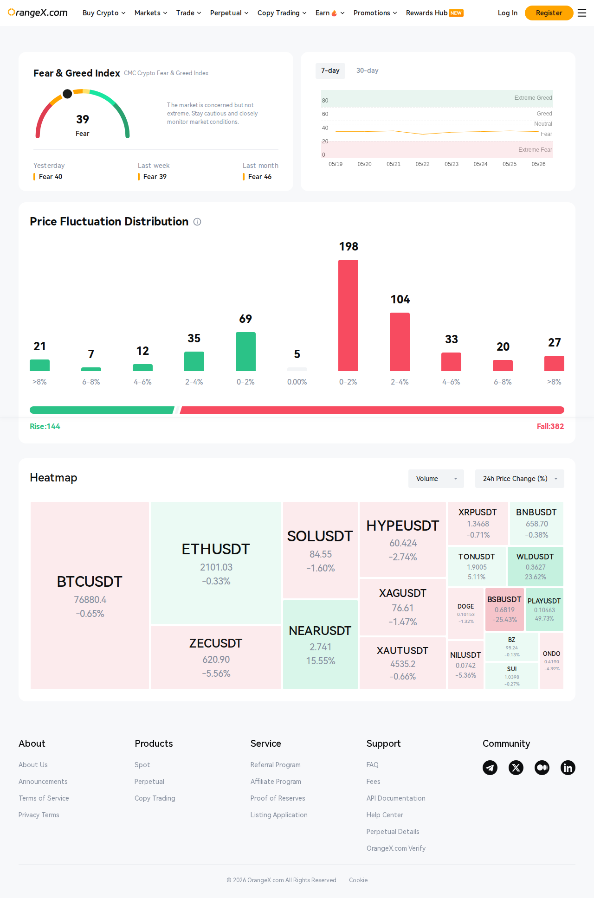

每日加密市场情绪深度报告
=== 第一段：叙事与风险面 ===
市场在周末效应与低成交量环境中横盘整理，BTC坚守$76,800一线。稳定币总市值创$322B历史新高显示加密生态基底资金充裕，但机构持续流出与ETF资金未见明显增量令短期方向不明。ETH/BTC汇率跌至0.02713反映山寨币资金持续向BTC集中。
24h变化: 情绪指数34(恐惧) | BTC ↘0.5% | ETH ↘0.05% | SOL ↘1.3% | VIX 16.6(正常) | 清算量↘30% (multi-source)
BTC / ETH / SOL
- BTC现货成交量自2025年10月以来暴跌81%，分析师认为这既是看跌信号也可能蕴藏反转机会。比特币已进入"高风险区域"，机构资金持续流出加剧卖出压力。 (BlockBeats)
信息 1: BTC现报$76,773，24小时跌幅0.49%，成交量萎缩。24小时最高$77,906，最低$76,476。期货溢价指数（mark vs index）轻微负偏离-0.048%，显示期货市场无明显方向性溢价。 (Binance, CoinGecko)
信息 2: ETH现报$2,097，近乎持平。ETH/BTC汇率跌至0.02713，创近期新低，反映资金从山寨市场向BTC集中。Kraken 11小时前从EigenCloud赎回50,600 ETH（约$1.07亿）。 (BlockBeats, CoinGecko)
信息 3: SOL现报$84.47，跌幅1.31%，领跌主流币。链上净流入Top5为PENGU（$644K）、CRCLX（$591K）、EITHER（$459K）、JLP（$378K）、TRX（$350K），包括一个Solana链上TRX跨链桥代币。 (BlockBeats, CoinGecko)
ETF / 宏观 / 监管
信息 4: 稳定币总市值创$3,220亿历史新高，超过95个国家的外汇储备，显示加密生态基底流动性充裕。 (BlockBeats)
信息 5: 南非加密监管进入实施阶段，拟明确跨境规则，不会将持有加密资产列为犯罪。巴西加密渗透率达16%，监管成投资者首要关切。加拿大监管机构批准Robinhood收购数字资产公司WonderFi。 (BlockBeats)
信息 6: 阿联酋巨头IHC完成首笔机构级迪拉姆稳定币交易，金额$3,000万。 (BlockBeats)
DeFi / 安全事件
信息 7: SlowMist分析称Squid跨链桥安全事件非私钥问题，而是Safe Wallet图形模块漏洞。此外，Google虚假加密广告持续泛滥，仿冒Uniswap的钓鱼网站已盗取$40万。 (BlockBeats)
信息 8: Pendle计划全面转向限价单，称限价单贡献71%交易量。IOSG发文称DeFi到了"最危险时刻"，真正脆弱点不在代码而在机制设计。 (BlockBeats)
Meme / 小市值代币
信息 9: HYPE市值一度超越DOGE，HYPE Spot TWAP大单转为卖出压力，有巨鲸计划卖出48,000枚HYPE。隐私币ZEC盘中跳水8.5%，Hyperliquid上巨鲸被清算$148万。 (BlockBeats)
信息 10: Marlin（POND）24小时暴涨90%，市值$21.9M — 成为今日最热山寨币。但注意BSC上出现同一实体操纵多代币事件，ESPORTS单日暴跌93%。 (BlockBeats, CoinGecko)
预测市场 / Polymarket
信息 11: Polymarket预测"比特币5月跌至$75,000"概率升至54%。CFTC加强对预测市场的AI监控与跨境执法。Bloomberg评论称预测市场有潜力但边界模糊可能导致赌博化。 (BlockBeats)
融资 / VC
信息 12: AI创业公司Hark完成$7亿A轮融资，估值$60亿。跨链基础设施Squid完成$600万融资。加密金融基础设施Cycles完成$640万种子轮融资。稳定币发行商JPYC即将完成B轮融资，总融资约$3,140万。 (BlockBeats)
板块轮动
- 今日涨幅前三板块: NFT Index (+72.3%)、Market-Making Solution (+26.4%)、Game Studio (+25.5%)。
- 跌幅靠前板块因数据缺失较多（部分板块无24h变化数据），整体板快无明显集体下跌。 (CoinGecko)
风险 1: BTC现货成交量较2025年10月暴跌81%，严重缩量环境下方向性突破的可靠性降低，假突破风险上升。 → 观察: 若BTC在$76,000以上持续缩量横盘超过48小时，向下测试$74,000-$75,000支撑概率上升；失效条件: 放量突破$78,000则否定缩量下行假设。 (BlockBeats, analysis)
风险 2: 机构资金持续流出，"比特币进入高风险区域"信号发出。稳定币市值虽创新高但尚未转化为买入动力。 → 观察: 关注ETF资金流向及Coinbase溢价指数，若出现连续2天$2亿以上净流出确认机构减持趋势。 (BlockBeats, analysis)
风险 3: ETH/BTC汇率创阶段新低（0.02713），山寨币市场资金被严重抽血。 → 观察: 若ETH/BTC跌破0.026，山寨币全线回调风险加剧；失效条件: ETH放量突破$2,150收回汇率0.028以上。 (analysis)
风险 4: US10Y上行至4.51%附近（较24小时前4.48%上升约3bp），DXY升至99.1上方，宏观环境对风险资产构成温和压制。VIX 16.6仍处正常区间未发出恐慌信号。 → 观察: 若US10Y突破4.55%或VIX升至20以上，BTC将面临额外宏观压力；若无重大宏观事件，当前水平仅为温和逆风。 (BlockBeats, Yahoo Finance, analysis)
风险 5: Polymarket预测BTC 5月跌至$75,000的概率达54%，市场定价已部分消化下行风险。 → 观察: 5月仅剩5个交易日，若BTC保持$76,000以上则Polymarket合约价格或快速修正。 (BlockBeats)
风险 6: 链上安全事件频发（SlowMist揭露Safe Wallet漏洞、Google钓鱼广告持续活跃），DeFi安全风险上升。 → 观察: 关注是否有更大规模协议被利用，若有则可能引发恐慌性赎回。 (BlockBeats)
- 5月26日-30日 — Polymarket"BTC 5月跌至$75,000"合约到期 — 直接影响情绪面 (BlockBeats)
- 5月28日 — ETH月度期权到期日（Deribit），IV可能提前下行 — neutral (Deribit)
- 5月29日 — OKX发布Exchange OS基于X Layer的开源交易基础设施 — 中性偏利好OKB (BlockBeats)
- 5月下旬 — 美国-伊朗协议文本谈判可能在本周完成，地缘政治风险溢价若消退或利好风险资产 — bullish (BlockBeats)
- 持续关注 — SpaceX/OpenAI等史上最大IPO潮可能从加密市场抽走资金 — bearish (BlockBeats)
非财务建议声明: 本报告仅提供市场数据和情绪分析，不构成任何买卖建议。


=== 第二段：数据与技术面 ===
综合评分: -10/100 — 恐惧情绪主导，但稳定币ATH与低清算量为市场提供底部支撑信号。
五大组件评分:
新闻情绪: -15/100 — 稳定币ATH（bullish）与机构持续流出（bearish）信号矛盾，整体负面偏见稍占上风。Ondo CEO去世、ZEC巨鲸清算等负面事件增加不确定性。 (BlockBeats)
价格/成交量: -40/100 — BTC 24h下跌0.5%但成交量较10月高点暴跌81%，极度缩量横盘。BTC.D升至58.21%显示资金从山寨币撤离。ETH/BTC汇率0.02713为阶段低点。 (Binance, CoinGecko, analysis)
DEX/meme活跃度: -10/100 — Marlin（POND）暴涨90%但市值仅$2,200万，GeckoTerminal Solana热门池中仅HOPPY/SOL成交量超$5M，其余多数低于$2M。新池无一满足>$50K流动性+$100K成交量门槛。 (GeckoTerminal, Dexscreener, analysis)
宏观/ETF/流动性: +5/100 — 稳定币总市值$3,220亿创ATH，这是最强做多信号。但DXY走强至99.11、US10Y升至4.51%、机构流出构成抵消。VIX 16.6正常、SPX +0.37%稳定。 (BlockBeats, Yahoo Finance, analysis)
杠杆与风险: +30/100 ↗ — 24h清算量仅$1.51亿(-30% vs昨日)，处于低位。多空比49.99:50.01极度中性。BTC ATM IV仅29.2%，处于低波动区间，衍生品市场未定价尾部风险。 (Coinglass, Deribit, analysis)
BlockBeats 底部/顶部指标完整列表:
· 整体市场流动性指数: Hold
· 比特币流动性指数: Hold
· 以太坊流动性指数: Hold
· 过去24小时累积比特币流动性指数: Hold
· 整体市场流动性（以比特币为单位）: Hold
· 合约多空比偏离指数: Hold
· 山寨币抗跌指数: Hold
· Bitfinex BTC/USD溢价: Hold
· USDC/USDT溢价: Buy
· Binance USDT借贷利率: Buy
· 持仓量加权资金费率年化利率: Hold
综合: 2 Buy / 0 Sell / 9 Hold — 指标高度一致地指向"观望"，USDC/USDT溢价和Binance USDT借贷利率两个Buy信号属于稳定币端的小级别资金流入信号，尚未转化为全局看多共识。 (BlockBeats)
· BTC: $76,773（CG）/ $76,855（Binance），24h -0.49%，成交量$6.81亿USDT，24h高$77,906/低$76,476。1小时线显示H-6（约UTC 8:00）出现明显恐慌下跌（-0.68%），随后6小时缓慢修复。期货溢价指数偏离-0.048%，期货接近平水。 (Binance, CoinGecko)
· ETH: $2,097（CG）/ $2,098（Binance），24h几乎持平(-0.05%)，成交量$3.58亿USDT，高$2,142/低$2,085。1小时线显示ETH在H-6同样跟随BTC跳水（-0.72%），但修复速度更快（H-1回弹至$2,101）。期货溢价指数偏离-0.047%。 (Binance, CoinGecko)
· SOL: $84.47（CG）/ $84.50（Binance），24h -1.31%，成交量$1.33亿USDT，高$86.52/低$83.85。1小时线显示SOL下行趋势更明显，稳步走低。期货溢价指数偏离-0.059%。 (Binance, CoinGecko)
· 全球: 总市值$2.64万亿（24h -0.59%），24h成交量$666亿。BTC.D为58.21%，ETH.D为9.58%，SOL.D为1.85%。BTC.D 24h变化不大，但ETH/BTC汇率下跌暗示山寨币市场份额在收缩。 (CoinGecko)
· 衍生品杠杆: 合约OI方面Binance $215亿 > Bybit $105亿 > Hyperliquid $69亿（5月24日数据）。跨交易所融资费率整体中性，主流币均未出现|funding_rate|>0.05%的异常。 (BlockBeats, CoinGecko)
· 清算数据: 24h总清算$1.51亿，较昨日下降30.3%。全球多空比49.99:50.01，极度中性。清算量处于近月低位，市场未出现大规模去杠杆事件。 (Coinglass)
· 宏观看板: SPX 7,473（+0.37% 24h），VIX 16.6（正常区间），DXY 99.11（日内+0.14%），US10Y 4.508%（较日内低点4.47%上行约4bp），Gold $4,533（+0.26%）。BTC与SPX仍呈弱正相关，BTC与Gold均为避险资产但今日方向背离（BTC跌、Gold涨）。 (Yahoo Finance, BlockBeats)
· 期权波动率: BTC ATM IV约29.2%（低波动，<40%门槛）。ETH ATM IV约39.1%（低波动边缘）。ETH-BTC IV价差约9.9个百分点（<15%），未显示山寨币投机溢价。VIX（16.6）与BTC IV（29.2）走势分化，显示加密期权市场定价的波动性高于美股。 (Deribit, Yahoo Finance)
筛选标准: CoinGecko Trending Top15 ∩ 24h涨幅>5% ∩ 有可验证DEX数据或BlockBeats叙事支撑。
MARLIN（POND / Ethereum）: $0.0027，24h +90.1%，市值$2,190万。公告驱动的暴涨，限价单激励计划推升交易量。Dexscreener未检索到可靠DEX数据（代币流动性分散在多个DEX）。催化剂: Pendle相关限价单叙事映射至Marlin。风险: 极高波动，市值极低，容易暴涨暴跌。 (CoinGecko, BlockBeats)
NEAR（NEAR / NEAR Protocol）: $2.74，24h +15.1%，市值$35.6亿。BlockBeats深度文章《NEAR翻倍事件：三大趋势驱动币价"火箭引擎"》支撑叙事。催化剂: AI基础设施叙事、协议升级预期。风险: 连续大涨后获利盘压力增大。 (CoinGecko, BlockBeats)
OKB（OKB / Ethereum）: $94.06，24h +13.0%，市值$19.7亿。盘中突然拉升超10%，OKX发布Exchange OS基于X Layer的开源交易基础设施消息提振。催化剂: 交易所生态扩展叙事。风险: 交易所代币涨跌受平台自身事件驱动，持续性存疑。 (CoinGecko, BlockBeats)
GRASS（GRASS / Solana）: $0.572，24h +6.6%，市值$3.36亿。连续多日上涨，Solana生态AI+DePIN叙事持续发酵。催化剂: AI代理与去中心化网络叙事。风险: 涨幅已累积，短期追高风险加大。 (CoinGecko)
Bittensor（TAO）: $282.56，24h +2.5%，市值$27.1亿。AI赛道龙头，持续获资金关注但涨幅已收敛。催化剂: AI基础设施叙事。风险: 市值已大，弹性有限。 (CoinGecko)
Solana DEX热门池（GeckoTerminal trending_pools，> $1M日均量）:
· HOPPY/SOL: 24h成交量$5.72M，价格+670%（Meme币，极端波动） (GeckoTerminal)
· CARDS/USDC: 24h成交量$6.61M，价格+21.4%（Collector Crypt卡牌游戏） (GeckoTerminal)
· TROLL/SOL: 24h成交量$3.19M，价格-9.4%（新Meme，流动性$3.7M） (GeckoTerminal)
Solana新池（48h内，满足>$50K流动性+>$100K 24h量）: 无满足条件的新池。
Solana链上净流入Top5（BlockBeats）:
· PENGU: 净流入$644K，市值$6.13亿 (BlockBeats)
· CRCLX: 净流入$591K，市值$5,955万 (BlockBeats)
· EITHER: 净流入$459K，市值$2,035万 (BlockBeats)
· JLP: 净流入$378K，市值$9.16亿 (BlockBeats)
· TRX（Solana跨链）: 净流入$350K，市值$1,823万 (BlockBeats)
基于以上全部数据，未来24-48小时最可能的三个情景:
情景 1（概率: 50%，置信度: 中）: 缩量横盘延续。BTC在$76,000-$78,000区间内持续震荡，ETH跟随。稳定币ATH提供潜在买盘但机构流出抵消，市场等待新的催化剂。关键条件: 无重大宏观事件（伊朗协议、美数据公布），BTC成交量维持低迷。若发生则BTC目标: $76,000-$77,500, ETH: $2,080-$2,120。
情景 2（概率: 30%，置信度: 中）: 向下测试$75,000支撑。BTC现货成交量持续萎缩，机构流出加速，Polymarket 54%概率暗示市场已部分定价下行。关键条件: BTC跌破$76,000心理关口引发放量，ETH/BTC汇率继续走低。若发生则BTC目标: $74,500-$75,500, ETH: $2,030-$2,060。
情景 3（概率: 20%，置信度: 低）: 向上突破$78,000。稳定币$322B ATH的流动性最终转化为买盘，配合伊朗协议积极进展带动风险偏好回升，空头回补加速。关键条件: 出现>$5亿的ETF单日净流入或Coinbase溢价转为正，BTC放量突破$77,500。若发生则BTC目标: $78,500-$80,000, ETH: $2,150-$2,200。
以上为基于当前数据的概率判断，不构成交易建议。